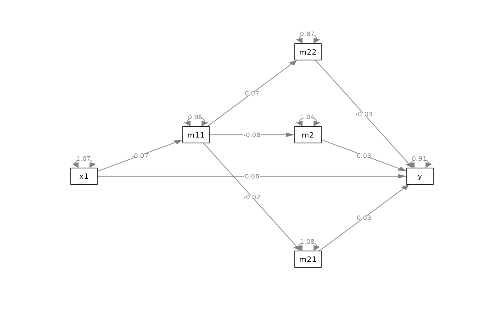
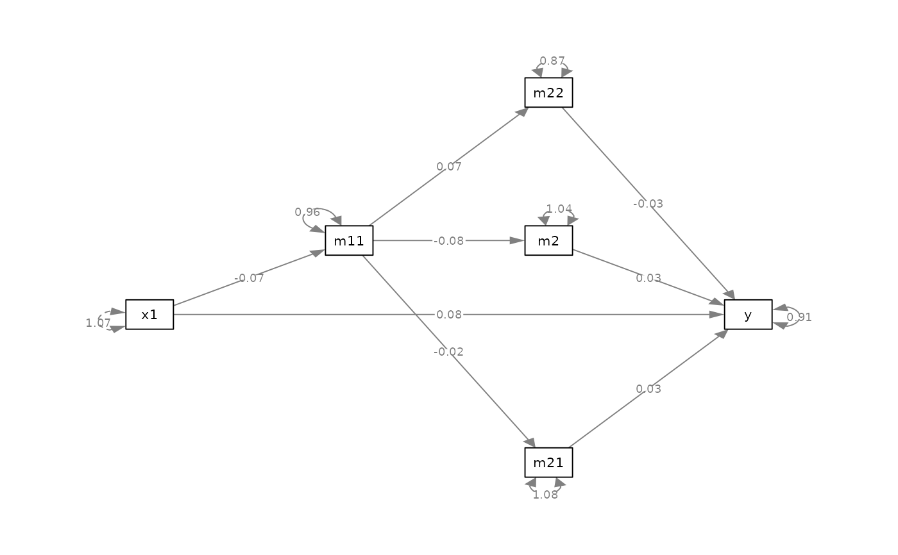

Rotate the residuals (or R-squares) to avoid overlapping with paths.
Usage
safe_resid_position(
object,
layout,
default_angle = 0,
style = c("1200", "geometry"),
update_plot = TRUE
)Arguments
- object
It can be the output of
lavaan::sem()orlavaan::lavaan(), or alavaan-class object. The model must have abetamatrix of the structural path. It can also be aqgraphobject generated bysemPlot::semPaths().- layout
A layout matrix. Required if
objectis alavaan-class object. Ignored ifobjectis aqgraphobject.- default_angle
Used if
objectis alavaan-class object. The default position of a residual, defined in the same way angle is defined forrotate_resid(). Ignored ifobjectis aqgraphobject.- style
The convention for the angles. If
"1200", the default, the convention ofrotate_resid()is used: top (12 o'clock) is 0, clockwise angle is positive and counterclockwise angle is negative. if"geometry", then the convention in geometry is used: right is 0, counterclockwise is positive, and clockwise is negative.- update_plot
Logical. Used on if
objectis aqgraphobject. IfTRUE, the function returns a modifiedqgraphobject. IfFALSE, the function returns a named vector of the new positions.
Value
If object is a lavaan-class
object, it returns
a named numeric vector of residual
angles to be used by
rotate_resid().
If object is a qgraph object
and update_plot is TRUE, it
returns a qgraph object with the
residuals's angles adjusted.
Otherwise, it returns a named vector
of the angles, as
for a lavaan-class object.
Details
This function identify all directed paths connected to a node, and find the largest arc with no directed paths. The residual (or R-square) is then set to the mid-point of this arc.
This function is intended for having
a "likely" readable graph with as
little user-intervention as possible.
If precise control of the positions
is desired, use rotate_resid().
Only directed paths (single-headed arrows) will be considered. Bidirectional paths such as covariances are not taken into account.
See also
rotate_resid()
on rotating a residual.
Examples
library(lavaan)
library(semPlot)
# Create a dummy dataset
mod_pa <-
"
m11 ~ x1
m21 ~ m11
m2 ~ m11
m22 ~ m11
y ~ m2 + m21 + m22 + x1
"
fit <- lavaan::sem(
mod_pa,
do.fit = FALSE
)
dat <- simulateData(
parameterTable(fit),
sample.nobs = 500,
seed = 1234
)
fit <- lavaan::sem(
mod_pa,
dat
)
# Set the layout
m <- auto_layout_mediation(
fit
)
p <- semPaths(
fit,
whatLabels = "est",
layout = m,
DoNotPlot = TRUE
) |>
safe_edge_label_position()
plot(p)

# Update the plot
p_safe <- p |> safe_resid_position()
plot(p_safe)

# Set the positon manually
pos_new <- safe_resid_position(p,
update_plot = FALSE)
pos_new
#> m11 m21 m2 m22 y x1
#> -40.579093 -174.624517 15.481878 5.375483 -264.624517 -105.481878
p_safe2 <- p |>
rotate_resid(pos_new)
plot(p_safe2)